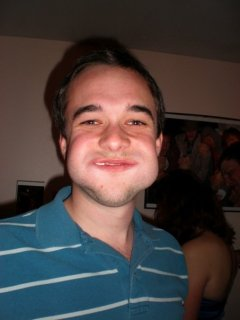
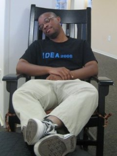

The Stylish Gentlemen of Team Hey!
Jonas Ketterle

Jonas Ketterle is a Masters student in Mechanical Engineering at Stanford University, where he is pursuing concentrations in mechatronics, heat transfer, and fluid dynamics. He is interested in bringing basic services such as electricity and clean water to the world's poorest one billion.
Ruddick Lawrence
Ruddick is a first-year coterm in Mechanical Engineering, which means he's spent his whole undergraduate career around Terman. This quarter, however, takes the cake for time spent in a lab. His concentration is mechatronics and robotics, and he dabbles in web design every now and again. He will be back for ME 218C next quarter.
Michael McDaniels
Michael McDaniels is a coterm student in Mechanical Engineering. He is passionate about functional design and invention. After graduating he plans to travel abroad while doing design projects.